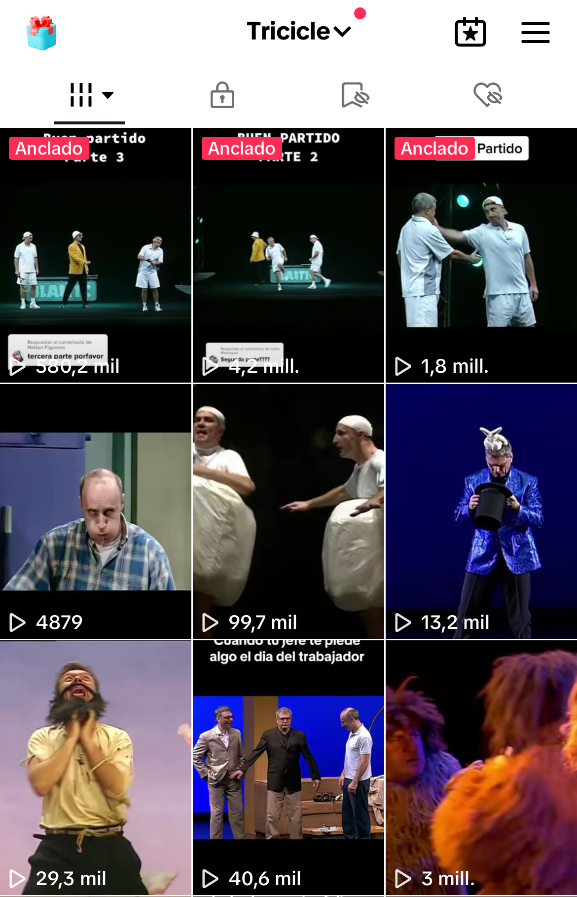
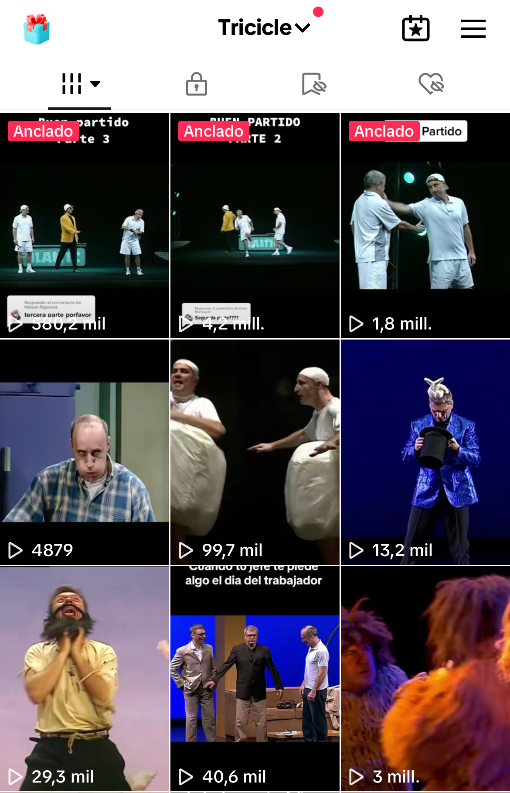
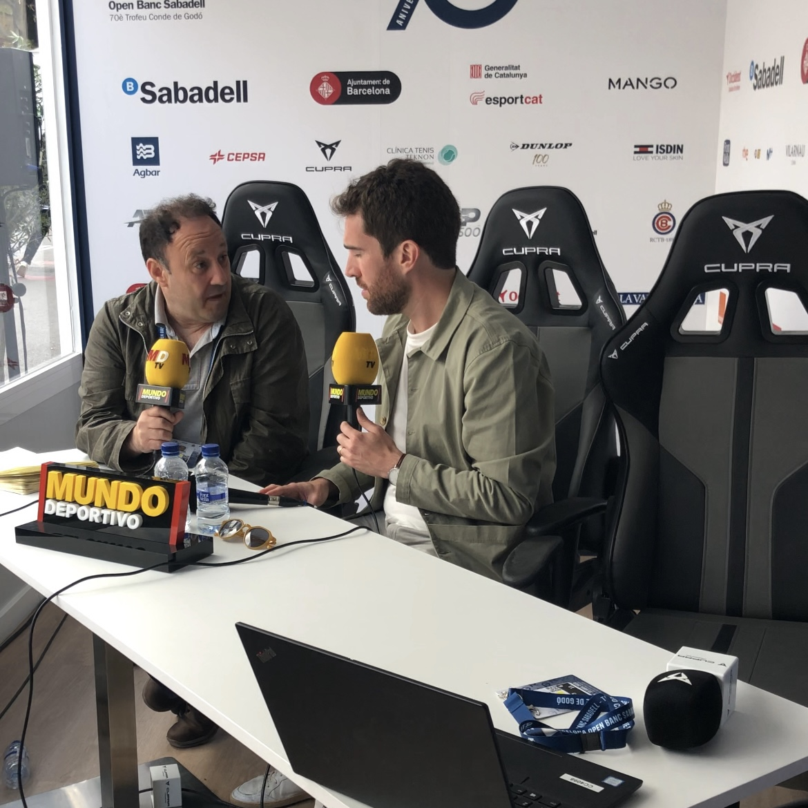
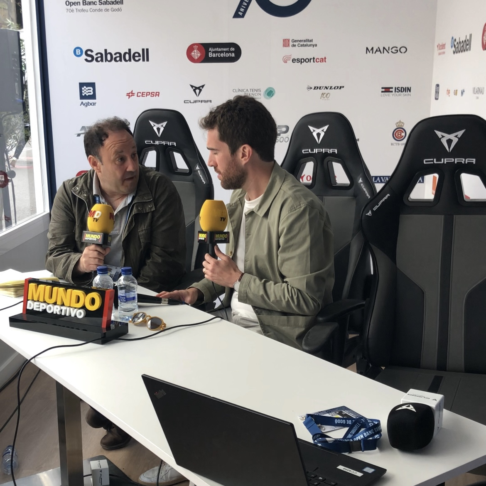

Sobre Mí
Soy un estudiante de Comunicación Interactiva con una gran motivación por trabajar y adquirir experiencia en el mundo laboral. Poseo habilidades creativas y disfruto del trato con las personas, además de contar con conocimientos en imagen y redes sociales, así como en informática y programación y desarrollo web. Soy una persona versátil y con capacidad para encontrar soluciones rápidas y eficientes ante cualquier situación.
Experiencia Laboral
Community Manager | Tricicle
Febrero 2021 - Actualidad
- Gestiono la presencia en línea de la compañía de teatro cómico Tricicle.
- Creo y publico contenido en sus plataformas sociales.
- Desarrollo teasers y carteles para sus próximos proyectos.
- Proporciono apoyo especializado en edición para mejorar la calidad de sus materiales visuales y promocionales.
.PNG)
.PNG)
.PNG) 

Gestor De Contenido | RTVE
Febrero 2021 - Actualidad
- Responsable de la gestión y actualización de contenido en las plataformas digitales de RTVE.
- Edición de videos para redes sociales, tanto informativos como contenidos culturales.
- Adaptación de formatos tradicionales al lenguaje digital y multiplataforma.
- Redacción y realización para la producción de contenido web.
- Supervisión de métricas de audiencia y ajuste de estrategias según datos analíticos.
Creador de Contenido Multiplataforma | UAB
10 de abril - Actualidad
- Desarrollo integral de contenido para los canales oficiales de YouTube y TikTok de la UAB, desde la concepción de ideas hasta la publicación final.
- Redacción de guiones atractivos y alineados con la estrategia de comunicación de la universidad, asegurando la claridad y el impacto del mensaje.
- Grabación y protagonización de videos, garantizando una ejecución profesional y una conexión efectiva con la audiencia.
- Edición y postproducción de videos, utilizando técnicas avanzadas para mejorar la calidad visual y sonora, incrementando el engagement de los seguidores.
CM Y CREADOR DE CONTENIDO | Godó
13 - 23 De abril 2017
- Durante mi experiencia laboral en Tennium, trabajé en el Godó como responsable de la creación de contenido para plataformas como Tik Tok e Instagram.
- Mi rol principal fue encargarme del plato de streaming, asegurando su montaje y correcto funcionamiento.
- Desarrollé habilidades en gestión de proyectos, resolución de problemas y trabajo en equipo.
- Amplié mis conocimientos en streaming y redes sociales.
.PNG) 

VIDEOGRAFO | Tennium
Trabajo ocasionalmente para Tennium creando contenido audiovisual.
- Grabo videos e imágenes de torneos y eventos.
- Edito y produzco anuncios que sean atractivos y efectivos.
Community Manager | Forever Young
Diciembre 2019 - Enero 2021
- Fui responsable de la gestión de redes sociales para la obra de teatro Forever Young.
- Me encargué de subir contenido regularmente.
- Mi objetivo fue crear un perfil atractivo para el día del estreno.
Community Manager | The End
Diciembre 2021 - Mayo 2017
- Encargado de redes sociales en el Pub The End, responsable de la gestión de las redes sociales del establecimiento.
- Creación y publicación de contenido de calidad y relevante para los seguidores.
- Generé interacciones con los clientes, aumentando la visibilidad y el alcance del pub.
- Diseñé el logo actual del establecimiento y creé los flyers semanales para eventos y promociones.
Habilidades
Desarrollo web
Cuento con sólidos conocimientos en desarrollo web utilizando tecnologías como HTML, CSS, Java, Python y PHP. Tengo experiencia creando y optimizando sitios web, asegurando su funcionalidad y diseño adaptativo para mejorar la experiencia del usuario. Sobra decir que la página web en la que se encuentran ha sido completamente desarrollada por mí haciendo uso de Html, css y Java.
Videografo
Tengo un gran dominio en ls creación y edición de contenido audiovisual, utilizando herramientas avanzadas como Adobe Premiere, Photoshop y Audition. Tengo habilidades en edición de video, ajuste de colores, y tratamiento de audio, lo que me permite producir materiales visuales de alta calidad.
Community Manager
Como Community Manager, poseo experiencia gestionando redes sociales y creando estrategias de contenido efectivas. Conozco los algoritmos de diferentes plataformas, lo que me permite optimizar la visibilidad y engagement de las publicaciones y generar un crecimiento orgánico de la comunidad.
---------------------------------
HTML/CSS
JavaScript
Photoshop
Premiere
Redes Sociales
Pack Office
WordPress
Python
Educación
ESO | Sagrado Corazón de Sarria
2015-2018
Bachillerato| Sagrado Corazón de Sarrià
2019-2021
Comunicación Interactiva | UAB
2021-Actualidad
Contacto
Email: v.rodriguezortiz0@gmail.com
Teléfono: +34 646141016
Calle de los Caponata 14, Barcelona